import rasterio
import numpy as np
import osmnx as ox
import pandas as pd
import geopandas as gpd
import matplotlib.pyplot as plt
plt.style.use('ggplot')
plt.rcParams.update({'font.size': 16, 'axes.labelweight': 'bold', 'figure.figsize': (6, 6), 'axes.edgecolor': '0.2'})Chapter 1: Introduction to Spatial Data
Tomas Beuzen, 2021
Chapter Outline
Chapter Learning Objectives
- Describe the difference between vector and raster data.
- Load vector data into
geopandas. - Plot vector data using the
geopandasmethod.plot(). - Wrangle vector data using
geopandasfunctions, methods, and attributes likegpd.sjoin(),gpd.clip(),.length(),.buffer(), etc. - Import data from OpenStreetMap using
osmnx. - Read raster data with
rasterio. - Describe at a high level why coordinate reference systems (CRS) are important and identify the CRS of a
geopandasobject using the.crsattribute and reproject it to another CRS using the.to_crs()method.
Imports
1. Introduction to spatial data
Spatial data (or “geospatial” data) are data with location information. In this short course, we’ll learn to wrangle, plot, and model this kind of data to describe and understand its spatial information and dependence.
To get you excited about geospatial data, here’s a cool 3D map of UBC that we’ll build together next lecture:
%%html
<iframe src="../_images/ubc-3d.html" width="80%" height="500"></iframe>The first thing we need to know is that there are two main data formats used to represent spatial data: 1. Vector format 2. Raster format
2. Working with vector data
2.1. Vector data
Vector data is an intuitive and common spatial data format and the one we’ll focus on most in this chapter. Vector data is simply a collection of discrete locations ((x, y) values) called “vertices” that define one of three shapes: 1. Point: a single (x, y) point. Like the location of your house. 2. Line: two or more connected (x, y) points. Like a road. 3. Polygon: three or more (x, y) points connected and closed. Like a lake, or the border of a country.
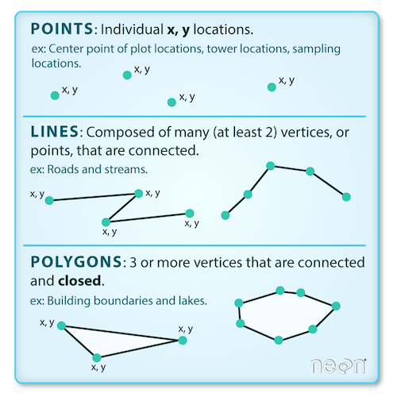
Vector data is most commonly stored in a “shapefile”. A shapefile is actually composed of 3 required files with the same prefix (here, spatial-data) but different extensions: 1. spatial-data.shp: main file that stores records of each shape geometries 2. spatial-data.shx: index of how the geometries in the main file relate to one-another 3. spatial-data.dbf: attributes of each record
There are other optional files that may also be part of a shapefile but we won’t worry about them for now. Each shapefile can only contain one type of shape. For example, the descriptions for a house (point), a road (line), and a postal code area (polygon) would be stored in three separate shapefiles.
There are other file-types for storing vector data too like
geojson. These files can generally be imported into Python using the same methods and packages we use below.
2.2. Geopandas
The Python geopandas library is the main library we’ll be using to work with vector data in Python. It’s built off shapely (which is the Python library for working with geometric objects in Python) and pandas. Similar to pandas, geopandas provides two key classes for spatial data manipulation: 1. GeoSeries: just like a pandas series but stores geometries like points, lines, polygons (we’ll see that shortly) 2. GeoDataFrame: just like a pandas dataframe with one or more columns of regular series and one or more columns of geoseries.
Along with those classes, we also have a variety of cool geopstial wrangling methods which we’ll explore in this chapter. For now, here’s a schematic of a GeoDataFrame:
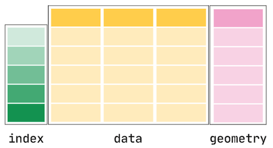
Source: GeoPandas Documentation.
We usually import geopandas using the alias gpd:
import geopandas as gpd2.3. Loading data
Let’s take a look at loading in a shapefile to a GeoDataFrame now. I downloaded a shapefile of Candian provinces from statcan as a shapefile that looks like this:
provinces
├── provinces.dbf
├── provinces.shp
├── provinces.shx
└── provinces.prj # this contains projection information which I'll dicuss laterWe can read that shapefile using gpd.read_file():
provinces = gpd.read_file("data-spatial/provinces") # note that I point to the shapefile "directory" containg all the individual files
provinces = provinces.to_crs("EPSG:4326") # I'll explain this later, I'm converting to a different coordinate reference system
provinces| PRUID | PRNAME | PRENAME | PRFNAME | PREABBR | PRFABBR | geometry | |
|---|---|---|---|---|---|---|---|
| 0 | 10 | Newfoundland and Labrador / Terre-Neuve-et-Lab... | Newfoundland and Labrador | Terre-Neuve-et-Labrador | N.L. | T.-N.-L. | MULTIPOLYGON (((-57.40256 54.14965, -57.38429 ... |
| 1 | 11 | Prince Edward Island / Île-du-Prince-Édouard | Prince Edward Island | Île-du-Prince-Édouard | P.E.I. | Î.-P.-É. | MULTIPOLYGON (((-61.98300 46.45775, -61.98136 ... |
| 2 | 12 | Nova Scotia / Nouvelle-Écosse | Nova Scotia | Nouvelle-Écosse | N.S. | N.-É. | MULTIPOLYGON (((-61.90233 45.87878, -61.90057 ... |
| 3 | 13 | New Brunswick / Nouveau-Brunswick | New Brunswick | Nouveau-Brunswick | N.B. | N.-B. | MULTIPOLYGON (((-64.80155 47.80365, -64.80155 ... |
| 4 | 24 | Quebec / Québec | Quebec | Québec | Que. | Qc | MULTIPOLYGON (((-58.64703 51.20816, -58.63991 ... |
| 5 | 35 | Ontario | Ontario | Ontario | Ont. | Ont. | MULTIPOLYGON (((-88.86612 56.84777, -88.86838 ... |
| 6 | 46 | Manitoba | Manitoba | Manitoba | Man. | Man. | MULTIPOLYGON (((-94.82341 59.99352, -94.82398 ... |
| 7 | 47 | Saskatchewan | Saskatchewan | Saskatchewan | Sask. | Sask. | POLYGON ((-109.63748 60.00005, -109.62498 60.0... |
| 8 | 48 | Alberta | Alberta | Alberta | Alta. | Alb. | POLYGON ((-110.00001 59.95257, -110.00001 59.9... |
| 9 | 59 | British Columbia / Colombie-Britannique | British Columbia | Colombie-Britannique | B.C. | C.-B. | MULTIPOLYGON (((-135.40000 60.00006, -135.3875... |
| 10 | 60 | Yukon | Yukon | Yukon | Y.T. | Yn | MULTIPOLYGON (((-136.46988 68.86889, -136.4686... |
| 11 | 61 | Northwest Territories / Territoires du Nord-Ouest | Northwest Territories | Territoires du Nord-Ouest | N.W.T. | T.N.-O. | MULTIPOLYGON (((-134.49321 69.70799, -134.4947... |
| 12 | 62 | Nunavut | Nunavut | Nunavut | Nvt. | Nt | MULTIPOLYGON (((-94.65114 72.00040, -94.64164 ... |
type(provinces)geopandas.geodataframe.GeoDataFrameBecause geopandas is built off pandas, our GeoDataFrame inherits most of the same functionality as a regular dataframe. For example, let’s try the .info() method:
provinces.info()<class 'geopandas.geodataframe.GeoDataFrame'>
RangeIndex: 13 entries, 0 to 12
Data columns (total 7 columns):
# Column Non-Null Count Dtype
--- ------ -------------- -----
0 PRUID 13 non-null object
1 PRNAME 13 non-null object
2 PRENAME 13 non-null object
3 PRFNAME 13 non-null object
4 PREABBR 13 non-null object
5 PRFABBR 13 non-null object
6 geometry 13 non-null geometry
dtypes: geometry(1), object(6)
memory usage: 856.0+ bytesNote we have 5 columns of dtype “object” which typically means “strings” in pandas, and we have our one “geometry” column which contains vector data - polygons in this case. Well we have MULTIPOLYGONs which just means multiple polygons together, for example British Columbia has a lot of little islands, so to make a boundary of it, we need multiple polygons.
geopandas has built-in plotting functionality (just like pandas) which is useful for making quick plots to visualize your data:
provinces.plot(edgecolor="0.2", figsize=(10, 8))
plt.title("Canada Provinces and Territories");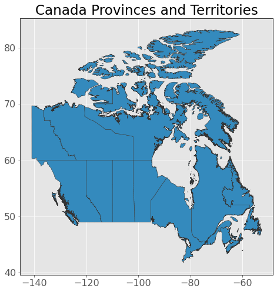
That looks like Canada to me! We can also index our GeoDataFrame just like a regular dataframe:
provinces.iloc[[0]]| PRUID | PRNAME | PRENAME | PRFNAME | PREABBR | PRFABBR | geometry | |
|---|---|---|---|---|---|---|---|
| 0 | 10 | Newfoundland and Labrador / Terre-Neuve-et-Lab... | Newfoundland and Labrador | Terre-Neuve-et-Labrador | N.L. | T.-N.-L. | MULTIPOLYGON (((-57.40256 54.14965, -57.38429 ... |
name = provinces.iloc[0]["PRENAME"]
provinces.iloc[[0]].plot(edgecolor="0.2", figsize=(10, 8))
plt.title(name);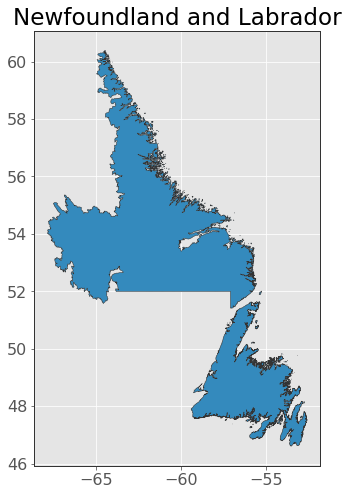
Let’s filter our dataframe for only British Columbia using the helpful pandas method .query():
province = "British Columbia"
bc = provinces.query("PRENAME == @province").copy()
bc| PRUID | PRNAME | PRENAME | PRFNAME | PREABBR | PRFABBR | geometry | |
|---|---|---|---|---|---|---|---|
| 9 | 59 | British Columbia / Colombie-Britannique | British Columbia | Colombie-Britannique | B.C. | C.-B. | MULTIPOLYGON (((-135.40000 60.00006, -135.3875... |
Now, let’s do some simple manipulation to clean up our dataframe:
bc = (bc.loc[:, ["PRENAME", "geometry"]]
.rename(columns={"PRNAME": "Province"})
.reset_index(drop=True)
)
bc| PRENAME | geometry | |
|---|---|---|
| 0 | British Columbia | MULTIPOLYGON (((-135.40000 60.00006, -135.3875... |
bc.plot(edgecolor="0.2")
plt.title("British Columbia");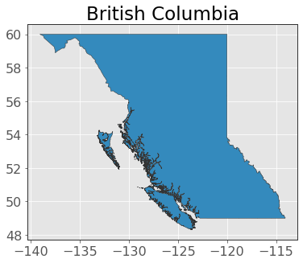
2.3. Making data
Typically, you’ll be loading data from a file like we did above (or using an API as we’ll do later in this chapter). But we can also create our own vector data. Let’s create some “points” for BC’s biggest cities in a regular dataframe:
cities = pd.DataFrame(
{"City": ["Vancouver", "Victoria", "Kelowna"],
"Population": [2_264_823, 335_696, 151_957],
"Latitude": [49.260833, 48.428333, 49.888056],
"Longitude": [-123.113889, -123.364722, -119.495556],
}
)
cities| City | Population | Latitude | Longitude | |
|---|---|---|---|---|
| 0 | Vancouver | 2264823 | 49.260833 | -123.113889 |
| 1 | Victoria | 335696 | 48.428333 | -123.364722 |
| 2 | Kelowna | 151957 | 49.888056 | -119.495556 |
We can coerce that data into a GeoDataFrame using gpd.GeoDataFrame() and by using the function gpd.points_from_xy() to change our “Latitude” and “Longitude” columns to geometries:
cities = gpd.GeoDataFrame(cities,
crs="EPSG:4326", # I'll talk about this later
geometry=gpd.points_from_xy(cities["Longitude"], cities["Latitude"]))
cities| City | Population | Latitude | Longitude | geometry | |
|---|---|---|---|---|---|
| 0 | Vancouver | 2264823 | 49.260833 | -123.113889 | POINT (-123.11389 49.26083) |
| 1 | Victoria | 335696 | 48.428333 | -123.364722 | POINT (-123.36472 48.42833) |
| 2 | Kelowna | 151957 | 49.888056 | -119.495556 | POINT (-119.49556 49.88806) |
Let’s plot those points on our map:
ax = bc.plot(edgecolor="0.2")
cities.plot(ax=ax, markersize=180, edgecolor="0.2")
plt.title("Big cities in B.C.");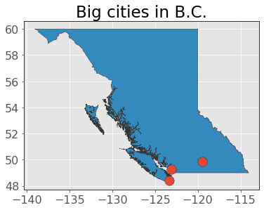
2.4. Loading from Open Street Map
So we can read vector data from a file and we can create our own, but let’s see what real power feels like!
Often it will be helpful to obtain data from an online source using an API. The most relevant “online source” here is OpenStreetMap (OSM), which is like the Wikipedia of geospatial data (think world map, road networks, bike networks, buidling heights, sandy coastlines, you name it). There are plenty of Python APIs for getting data from OSM but by far the best I’ve come across is osmnx:
conda install -c conda-forge osmnxosmnx provides an easy-to-use API to query OSM data. I usually import it with the alias ox. Let’s get a polygon of Vancouver now using the function ox.geocode_to_gdf():
By default
osmnxcaches responses locally in a foldercacheso that you can quickly access data again without needing to call the API. You can turn this behaviour off if you wish.
import osmnx as ox
vancouver = ox.geocode_to_gdf("Vancouver, Canada")
vancouver.plot(edgecolor="0.2")
plt.title("Vancouver");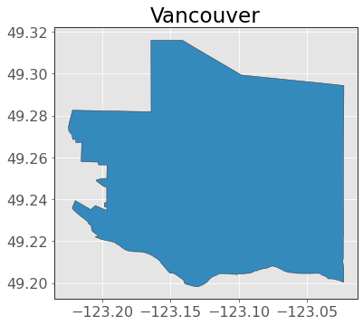
It’s certainly Vancouver, but it looks a bit blocky. It might be a bit low resolution, or someone just decided this was the best way to encapsulate “Vancouver” on OSM. Either way, let’s use this polygon to “clip” a section of our higher-resolution provinces data which we downloaded earlier (and which is the official shapefile downloaded from statcan).
This is the first geometric wrangling operation we’ll see. I’ll show some more later, but think of “clipping” as passing a top layer of cookie dough (the map above), over a bottom layer cookiecutter (our high-resolution provinces data) to get a shape out:
van_bc = gpd.clip(bc, vancouver)
van_bc.plot(edgecolor="0.2")
plt.title("Vancouver");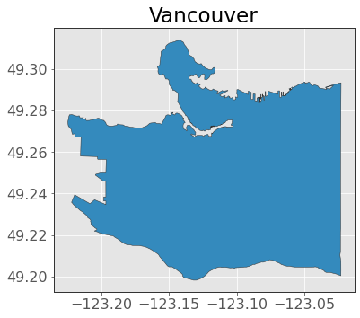
That looks better! Now we can clearly see Stanley Park at the top of the plot! Speaking of which, let’s get a polygon of Stanley Park:
stanley_park = ox.geocode_to_gdf("Stanley Park, Vancouver")And plot it on our map:
ax = van_bc.plot(edgecolor="0.2")
stanley_park.plot(ax=ax, edgecolor="0.2", color="tomato")
plt.title("Stanley Park");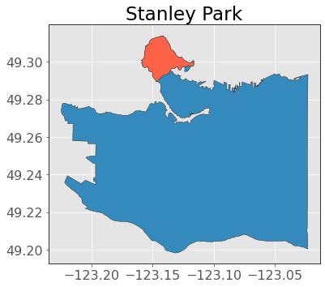
Okay let’s do one last cool thing! Let’s use osmnx to get the bicycle network within Stanley Park! We can get networks like road, rail, bike, etc., using the function ox.graph_from_place():
bike_network = ox.graph_from_place("Stanley Park, Vancouver",
network_type="bike")
bike_network<networkx.classes.multidigraph.MultiDiGraph at 0x13863b210>As you can see, this returns a different object, a networkx MultiDiGraph which is a structure for holding network/graph-like objects such as road networks. We’re not interested in graph operations, we are just interested in geometries, so we’ll convert this to a GeoDataFrame using the function ox.graph_to_gdfs():
bike_network = (ox.graph_to_gdfs(bike_network, nodes=False)
.reset_index(drop=True)
.loc[:, ["name", "length", "bridge", "geometry"]]
)
bike_network| name | length | bridge | geometry | |
|---|---|---|---|---|
| 0 | Stanley Park Causeway | 165.216 | yes | LINESTRING (-123.13719 49.29767, -123.13718 49... |
| 1 | Stanley Park Causeway | 62.901 | NaN | LINESTRING (-123.13719 49.29767, -123.13741 49... |
| 2 | NaN | 8.066 | NaN | LINESTRING (-123.13211 49.29737, -123.13212 49... |
| 3 | Stanley Park Drive | 80.558 | NaN | LINESTRING (-123.13211 49.29737, -123.13204 49... |
| 4 | NaN | 91.001 | NaN | LINESTRING (-123.13211 49.29737, -123.13212 49... |
| ... | ... | ... | ... | ... |
| 361 | NaN | 12.670 | NaN | LINESTRING (-123.12854 49.29693, -123.12863 49... |
| 362 | NaN | 44.325 | NaN | LINESTRING (-123.12854 49.29693, -123.12869 49... |
| 363 | Stanley Park Drive | 3.339 | NaN | LINESTRING (-123.14577 49.29042, -123.14572 49... |
| 364 | Park Lane | 29.437 | NaN | LINESTRING (-123.14668 49.29078, -123.14658 49... |
| 365 | Stanley Park Drive | 48.880 | NaN | LINESTRING (-123.14668 49.29078, -123.14670 49... |
366 rows × 4 columns
Now let’s plot this bike network on Stanley Park!
ax = stanley_park.plot(edgecolor="0.2")
bike_network.plot(ax=ax, edgecolor="0.2", color="tomato")
plt.title("Stanley Park Cycling");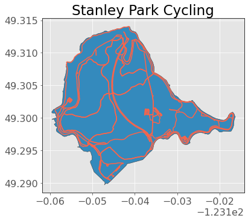
Amazing stuff!
2.5. Basic wrangling
So we did some cool mapping and data manipulation above, but what’s it all for? Why would you want to do any of this? Well we can now start calculating and manipulating this spatial data to answer questions. Let’s answer some now.
Question 1: What is the total length of bike lanes in Stanley Park?
Well, our GeoDataFrame actually already has this information, it came for free from our original ox.graph_from_place() function and is in the “length” column:
total_length = bike_network["length"].sum() # total length in m
print(f"Total bike lane length: {total_length / 1000:.0f}km")Total bike lane length: 58kmBut even if we didn’t have this column, we could still calculate lengths based on our line geometries and the .length attribute:
bike_network["geometry"]0 LINESTRING (-123.13719 49.29767, -123.13718 49...
1 LINESTRING (-123.13719 49.29767, -123.13741 49...
2 LINESTRING (-123.13211 49.29737, -123.13212 49...
3 LINESTRING (-123.13211 49.29737, -123.13204 49...
4 LINESTRING (-123.13211 49.29737, -123.13212 49...
...
361 LINESTRING (-123.12854 49.29693, -123.12863 49...
362 LINESTRING (-123.12854 49.29693, -123.12869 49...
363 LINESTRING (-123.14577 49.29042, -123.14572 49...
364 LINESTRING (-123.14668 49.29078, -123.14658 49...
365 LINESTRING (-123.14668 49.29078, -123.14670 49...
Name: geometry, Length: 366, dtype: geometrybike_network["geometry"].length/opt/miniconda3/envs/mds574/lib/python3.7/site-packages/ipykernel_launcher.py:1: UserWarning: Geometry is in a geographic CRS. Results from 'length' are likely incorrect. Use 'GeoSeries.to_crs()' to re-project geometries to a projected CRS before this operation.
"""Entry point for launching an IPython kernel.0 0.001653
1 0.000751
2 0.000073
3 0.001029
4 0.001151
...
361 0.000133
362 0.000477
363 0.000044
364 0.000393
365 0.000628
Length: 366, dtype: float64What’s that warning? More on that a bit later, but it’s telling us that our coordinate system has units of degrees - not linear units like meters which would be better for calculating distances. I’m going to convert my geometries to a coordinate systems based on linear units (meters). I’ll specify the projection “EPSG:3347” (Lambert projection) which is the one used by statcan:
bike_network = bike_network.to_crs("EPSG:3347")
bike_network["geometry"].length0 165.142206
1 62.941716
2 8.058879
3 80.655282
4 91.110800
...
361 12.667118
362 44.326065
363 3.343832
364 29.484229
365 48.942512
Length: 366, dtype: float64total_length = bike_network["geometry"].length.sum()
print(f"Total bike lane length: {total_length / 1000:.0f}km")Total bike lane length: 58kmThe same as we got before! Nice!
Question 2: What percentage of the area of Stanley Park is bike lanes?
This is a tougher one! First let’s calculate the “area” of our bike lanes. We need to make an assumption about the width of our lanes. This City of Vancouver planning document suggests the bike lanes around Stanley Park are about 3m so let’s go with that.
I’m going to use the .buffer() method to turn the lines of my bike network into polygons with a specified width (3m in our cases). Because my bike_network data is in linear meters units now (remember, I changed the projection), I’m also going to convert our Stanley Park map to that projection (“EPSG:3347”):
stanley_park = stanley_park.to_crs("EPSG:3347")Now let’s “buffer” our bike lanes to be me 3m wide polygons. “Buffer” just mean to add some area around the object:
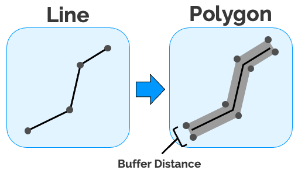
width = 3 # desired with of bike lanes in meters
bike_network["geometry"] = bike_network.buffer(distance=width / 2) # note that we provide distance as a radius (half the desired width)
bike_network| name | length | bridge | geometry | |
|---|---|---|---|---|
| 0 | Stanley Park Causeway | 165.216 | yes | POLYGON ((4018562.106 2009363.283, 4018563.601... |
| 1 | Stanley Park Causeway | 62.901 | NaN | POLYGON ((4018554.879 2009389.952, 4018550.455... |
| 2 | NaN | 8.066 | NaN | POLYGON ((4018874.157 2009173.346, 4018874.220... |
| 3 | Stanley Park Drive | 80.558 | NaN | POLYGON ((4018877.663 2009164.604, 4018883.832... |
| 4 | NaN | 91.001 | NaN | POLYGON ((4018870.301 2009159.558, 4018867.565... |
| ... | ... | ... | ... | ... |
| 361 | NaN | 12.670 | NaN | POLYGON ((4019075.828 2009012.416, 4019075.828... |
| 362 | NaN | 44.325 | NaN | POLYGON ((4019065.791 2008999.105, 4019063.426... |
| 363 | Stanley Park Drive | 3.339 | NaN | POLYGON ((4017636.250 2008950.892, 4017636.334... |
| 364 | Park Lane | 29.437 | NaN | POLYGON ((4017601.662 2009019.800, 4017601.738... |
| 365 | Stanley Park Drive | 48.880 | NaN | POLYGON ((4017591.429 2009020.028, 4017591.421... |
366 rows × 4 columns
ax = stanley_park.plot(edgecolor="0.2")
bike_network.plot(ax=ax, edgecolor="tomato")
plt.title("Stanley Park Cycling");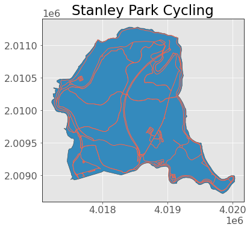
Now we can calculate the area using the .area attribute. Note that geopandas is smart enough to know that you probably want to calculate these spatial attributes on the geometry column, so you don’t actually have to index that particular column (if you have multiple geometry columns, then you can choose which one is “active” and acted on by default using the .set_geometry() method):
bike_network_area = bike_network.area.sum()
print(f"Bike path area: {bike_network_area:.0f} m2")Bike path area: 177968 m2If you think about it, that should be roughly similar to if we just multiplied our total_length from “Question 1” by 3 (the width of the bike paths):
total_length * 3175429.60863417128Well that’s a nice sanity check! Now we just need the area of Stanley Park and we can calculate our ratio:
stanley_park_area = stanley_park.area
print(f"{bike_network_area / stanley_park_area[0] * 100:.2f}% of Stanley Park is bike paths.")4.45% of Stanley Park is bike paths.Question 3: What FSA in Vancouver has the most bike lanes (by length)?
An FSA is a “forward sortation area”, basically a group of postcodes that all start with the same first 3 letters. So to answer this question, we need two things: 1. FSA polygons (available on statcan here) 2. The bike network for all of Vancouver
I have already downloaded the above shapefile of FSAs for all of Canada. We’ll load it in and then clip it using our Vancouver polygon:
fsa = gpd.read_file("data-spatial/fsa")
fsa = fsa.to_crs("EPSG:4326")
van_fsa = gpd.clip(fsa, vancouver)Now let’s get the Vancouver bike network using osmnx:
van_bike_network = ox.graph_from_place("Vancouver", network_type="bike")
van_bike_network = (ox.graph_to_gdfs(van_bike_network, nodes=False)
.reset_index(drop=True)
.loc[:, ["name", "length", "bridge", "geometry"]]
)Let’s take a look at our data so far:
ax = van_fsa.plot(edgecolor="0.2")
van_bike_network.plot(ax=ax, edgecolor="tomato", linewidth=0.5)
plt.title("Vancouver Cycling");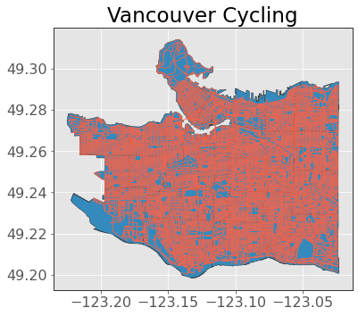
Okay so how do we work out the total length of bike lanes in each FSA? We need to do a spatial join, which joins two geometries based on their locations. In the plot below, we’ll join the column of the dark dot to the column(s) of the grey polygon because the dark dot is contained within the spatial region of the polygon.
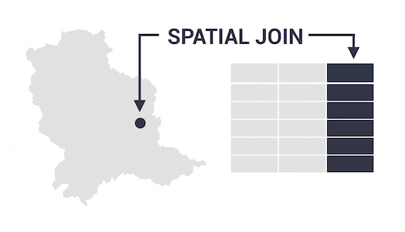
Source: GISGeography.
We can do a spatial join with gpd.sjoin() (it’s just like joining in base pandas). There are different options for the argument op which allow you how to control the join. Below I’ll specify “contain”, meaning I only want to join when a bike lane is fully contained within an FSA (you can read more about op in the documentation);
joined_data = gpd.sjoin(van_fsa, van_bike_network, how="inner", op="contains")
joined_data| CFSAUID | PRUID | PRNAME | geometry | index_right | name | length | bridge | |
|---|---|---|---|---|---|---|---|---|
| 1386 | V5Z | 59 | British Columbia / Colombie-Britannique | POLYGON ((-123.11483 49.26939, -123.11482 49.2... | 14683 | West 49th Avenue | 113.479 | NaN |
| 1386 | V5Z | 59 | British Columbia / Colombie-Britannique | POLYGON ((-123.11483 49.26939, -123.11482 49.2... | 11256 | West 49th Avenue | 113.479 | NaN |
| 1386 | V5Z | 59 | British Columbia / Colombie-Britannique | POLYGON ((-123.11483 49.26939, -123.11482 49.2... | 11211 | West 49th Avenue | 115.184 | NaN |
| 1386 | V5Z | 59 | British Columbia / Colombie-Britannique | POLYGON ((-123.11483 49.26939, -123.11482 49.2... | 11257 | West 49th Avenue | 115.184 | NaN |
| 1386 | V5Z | 59 | British Columbia / Colombie-Britannique | POLYGON ((-123.11483 49.26939, -123.11482 49.2... | 11214 | Fremlin Street | 51.729 | NaN |
| ... | ... | ... | ... | ... | ... | ... | ... | ... |
| 1615 | V6R | 59 | British Columbia / Colombie-Britannique | POLYGON ((-123.21376 49.27669, -123.21346 49.2... | 48960 | NaN | 221.171 | NaN |
| 1615 | V6R | 59 | British Columbia / Colombie-Britannique | POLYGON ((-123.21376 49.27669, -123.21346 49.2... | 48957 | NaN | 105.284 | NaN |
| 1615 | V6R | 59 | British Columbia / Colombie-Britannique | POLYGON ((-123.21376 49.27669, -123.21346 49.2... | 54169 | NaN | 105.284 | NaN |
| 1615 | V6R | 59 | British Columbia / Colombie-Britannique | POLYGON ((-123.21376 49.27669, -123.21346 49.2... | 40455 | NaN | 292.839 | NaN |
| 1615 | V6R | 59 | British Columbia / Colombie-Britannique | POLYGON ((-123.21376 49.27669, -123.21346 49.2... | 1231 | NaN | 292.839 | NaN |
57907 rows × 8 columns
Now we just need to .groupby():
(joined_data[["CFSAUID", "length"]].groupby(by="CFSAUID")
.sum()
.sort_values("length", ascending=False)
.head()
)| length | |
|---|---|
| CFSAUID | |
| V6P | 348095.253 |
| V5R | 281367.666 |
| V5X | 264815.800 |
| V5S | 259047.140 |
| V5K | 245773.116 |
We see that “V6P” has the largest length of bike lanes, what FSA is that?
ax = van_fsa.plot(edgecolor="0.2")
van_fsa.query("CFSAUID == 'V6P'").plot(ax=ax, edgecolor="0.2", color="tomato")
plt.title("FSA with most bike lane length");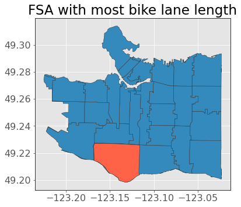
Looks good to me!
3. Working with raster data
Unlike vector data (geometric objects: like points, lines, polygons), raster data is a matrix of values of “pixels” (also called “cells”). Each cell represents a small area and contains a value representing some information:
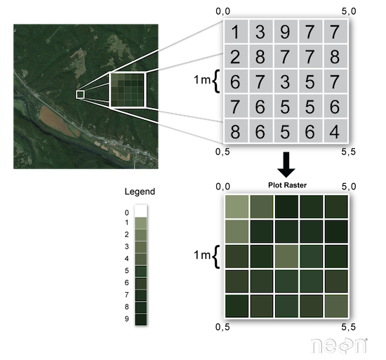
Raster data is like digital image data you look at on your computer, except that now, each pixel represents a spatial region. The “resolution” of a raster is the area that each pixel represents. A 1 meter resolution raster means that each pixel represents a 1 m x 1 m area on the ground. However, when we say “high resolution” we often mean, a low value of resolution for each pixel, i.e., 1 meter resolution is higher than 8 meter resolution as exmplified by the image below:

Like vector data, there are different file formats for storing raster data. The most common is GeoTIFF (.tif), which is essentially an image file with georeferencing information embedded within it. Raster data is used for a variety of problems, common examples include satellite imagery and digital elevation models. Those things are gettings a bit outside the scope of this course but let’s briefly look at some raster data below. The core packge for working with raster data in Python is rasterio.
import rasterioI have a satellite image raster file of part of UBC in my data folder which I downloaded from the Abacus Data Network. Let’s load it in with rasterio:
dataset = rasterio.open("tif/ubc-481E_5456N/481E_5456N.tif")We can start to investigate things like the width and height (in pixels/cells) of the raster:
print(f"Width: {dataset.width} pixels")
print(f"Height: {dataset.height} pixels")Width: 10000 pixels
Height: 10000 pixelsRaster data often have “bands” representing different information (for example, a colour image usually has red, green, and blue bands). This particular satellite image has 4 bands (in order: red, blue, green, infrared):
dataset.count4We could import the first band as a numpy array using:
band1 = dataset.read(1)
band1array([[ 70, 67, 52, ..., 88, 86, 85],
[ 64, 60, 53, ..., 89, 88, 92],
[ 67, 63, 62, ..., 93, 104, 107],
...,
[ 58, 56, 54, ..., 52, 28, 20],
[ 55, 56, 55, ..., 55, 30, 25],
[ 54, 57, 59, ..., 30, 19, 29]], dtype=uint8)But before importing anymore data, it’s helpful to just see the image. First I’m going to “downsample” my raster (reduce the resolution by increasing the cell size) to reduce the size of the data and speed things up a bit:
rescale_factor = 0.5
scaled_data = dataset.read(out_shape=(dataset.count, int(dataset.height * rescale_factor),
int(dataset.width * rescale_factor))
)
print(f"Scaled shape: {scaled_data.shape}")Scaled shape: (4, 5000, 5000)As our data is just numpy array(s), we can plot it with the matplotlib function plt.imshow():
fig, ax = plt.subplots(1, 4, figsize=(12, 4))
cmaps = ["Reds", "Blues", "Greens", "Purples"]
bands = ["Red Band", "Blue Band", "Green Band", "Infrared Band"]
for band in [0, 1, 2, 3]:
ax[band].imshow(scaled_data[band, :, :], cmap=cmaps[band])
ax[band].set_title(bands[band])
ax[band].axis("off")
plt.tight_layout();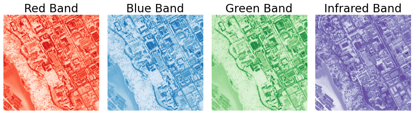
Of course, it looks more realistic using all channels:
plt.figure(figsize=(5, 5))
plt.imshow(np.moveaxis(scaled_data, 0, -1)[:, :, :3])
plt.axis("off")
plt.title("All bands");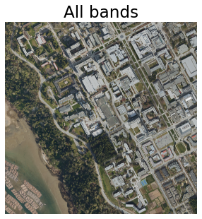
rasterio has lots of advanced fucntionality for manipulating and plotting raster data if you find the need to. Check out the documentation.
4. Coordinate reference systems
Generally speaking a coordinate reference system is how we project the 3D surface of the Earth onto a 2D shape for easy viewing

There are many different projections and they are typically identified by an EPSG code. No projection is perfect (it’s impossible to perfectly flatten a 3d sphere) and each comprises on minimzing the distortion of shapes, distances, and areas of the Earth. At a basic level, all you need to know is that some projections are: - in angular units (degrees of latitude and longitude) and are good for locating places on Earth, for making global maps, and minimizing shape distortion. The most common is WGS 84 (“EPSG:4326”) - in linear units (e.g., meters) and are good for measuring distances. Most common is UTM which splits the Earth into different linear regions, the code for the region encompassing British Columbia is “EPSG:32610”
But many countries/regions use other specific projections which minimize distortion of that specific area. For example Statistics Canada uses the Lambert projection for Canada (“EPSG:3347”). Much of the time, you will know or be told which projection to use based on your specific data/project.
Let’s take a quick look at some different projections for Canada now:
# Load data from geopandas
canada = gpd.read_file(gpd.datasets.get_path('naturalearth_lowres')).query("name == 'Canada'")
# Plot
fig, axs = plt.subplots(1, 3, figsize=(15, 12))
crs_list = [("WGS 84", "EPSG:4326"), ("Lambert", "EPSG:3347"), ("UTM 10N", "EPSG:32610")]
for n, (name, epsg) in enumerate(crs_list):
canada.to_crs(epsg).plot(ax=axs[n])
axs[n].set_title(name)
plt.tight_layout();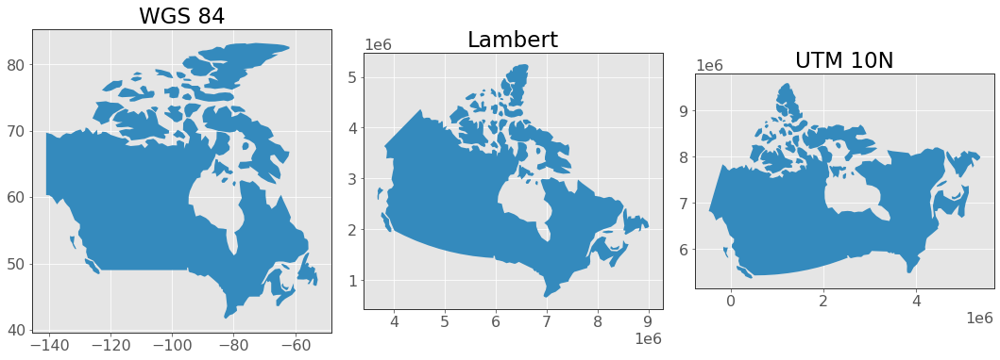